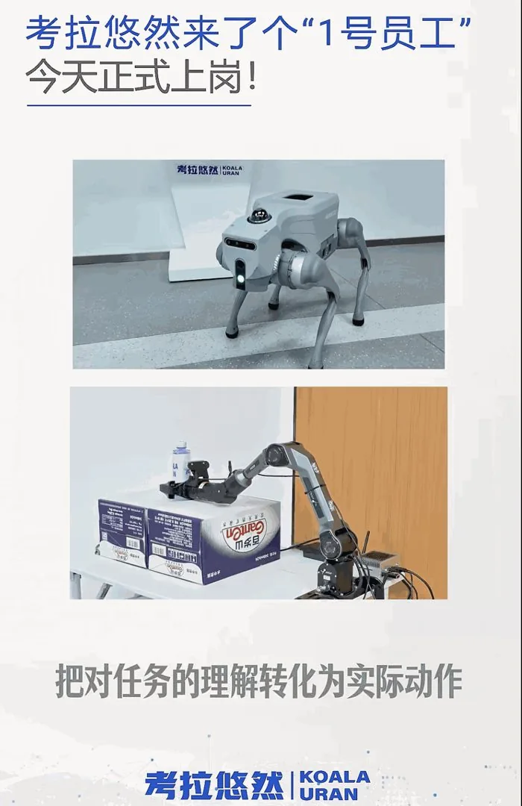

01 / EMBODIED AGENTREAL-WORLD SYSTEM
ONE MIND.
MANY BODIES.
MANY BODIES.
Observe→Plan→Act↺
Go2 · ARX X5 · RANGER MINI

PERCEPTION → PLANNING → EXECUTION → FEEDBACK↗
具身智能 · 跨本体任务闭环
Geek Mind Agent Runtime
以统一语义上下文、技能协议与本体连接器，连接高层任务规划和底层硬件执行，让同一套 Agent 面向机械臂、四足与轮式机器人工作。
项目档案
我负责什么
负责多模态感知、任务规划、工具调用和执行框架，以统一 Schema 定义技能参数与结果，由本体连接器映射导航、抓取、拍照与姿态控制接口。
关键设计
- 任务图：Planner 根据技能与状态生成 DAG，TaskRuntime 按依赖调度。
- 验证与恢复：结合位姿、策略状态和回执验证完成；失败时回传最新观测与剩余预算，保留已验证节点并重规划剩余任务。
- 端侧联调：输入时效检查、硬件预检和动作门控，配合 Docker Compose 在 Jetson 部署。
24.36%
Optimus / Minecraft
Iron、Gold、Diamond、Redstone、Armor 五组成功率的未加权平均；项目报告结果，未对齐论文完整协议。
从真机到仿真
在 Go2 / Go2-W、RANGER MINI 和 ARX X5 上完成导览、巡检联调；后续接入 Microduck 的 MuJoCo / ROS 2 仿真，探索导航、拍照、姿态控制与失败恢复。仿真结果不等同于 Microduck 真机验证。
StarDojo Lite-100 的 farming 类成功率从 4.8% 提升至 23.8%；该分类指标与 Minecraft 指标独立。
Microduck 仿真与运行记录 ↗